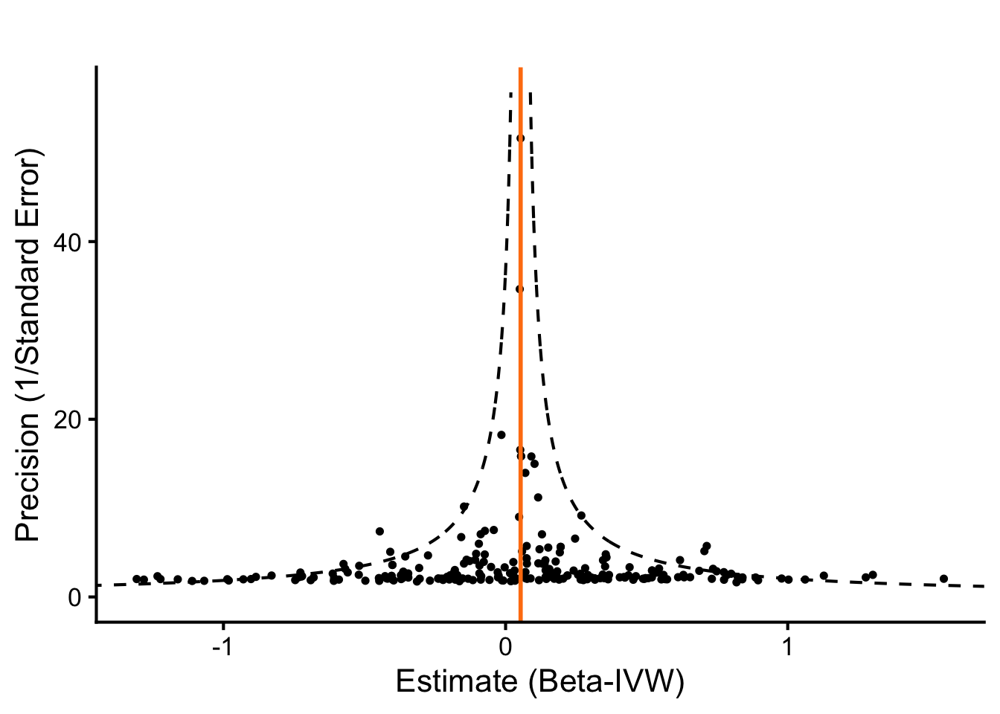
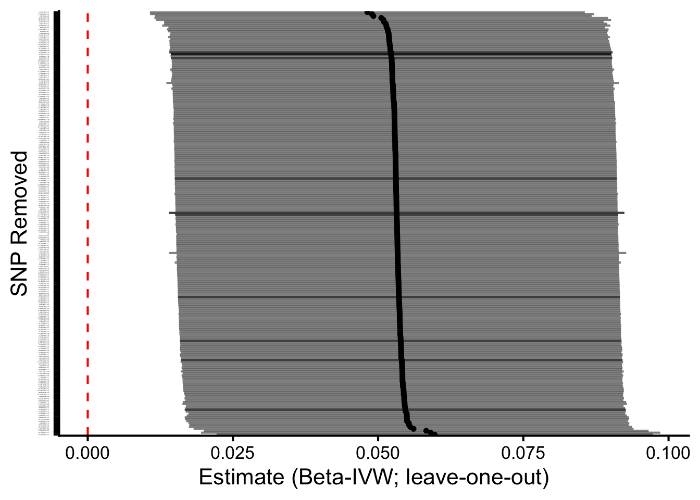

MR Analysis of SNPs for LDL Cholesterol and their Effect on Serum Calcium
Author
Dave Bridges
Published
October 14, 2025
Show the code
# hide this code chunk#| echo: false#| message: false# defines the se functionse <-function(x) {sd(x, na.rm =TRUE) /sqrt(length(x))}#load these packages, nearly always neededlibrary(tidyverse)library(knitr)# sets maize and blue color schemecolor_scheme <-c("#00274c", "#ffcb05")
Purpose
To validate SNPs for LDL cholesterol GWAS using those identified using UK Biobank. This script can be found in /Users/davebrid/Documents/GitHub/PrecisionNutrition/Human Genetics and was most recently run on Sat Oct 18 09:14:37 2025
Data Entry
Show the code
instruments.ldlc.file <-'LDL Cholesterol Instruments from UKBB.csv'gwas.calcium.file <-'PheWeb Summary Statistics/phenocode-Ca.tsv.gz'samplesize.outcome.calcium <-46100# loaded and renamed columnsinstruments.ldlc <-read_csv(instruments.ldlc.file) |>rename(SNP = SP2,beta.exposure = BETA,se.exposure = SE,effect_allele.exposure = EA,other_allele.exposure = OA,pval.exposure = P,eaf.exposure = ALT_FREQS,samplesize.exposure = N_exposure ) |>mutate(id.exposure="LDL Cholesterol (UK Biobank)",exposure="LDL Cholesterol (UK Biobank)")gwas.calcium <-read_tsv(gwas.calcium.file) |>mutate(ID=paste(chrom, pos, ref,alt, sep=":")) |>rename(SNP = ID, # or ID if that’s the matching IDbeta.outcome = beta,se.outcome = sebeta,effect_allele.outcome = alt, # whichever is effect alleleother_allele.outcome = ref, # whichever is other allelepval.outcome = pval,eaf.outcome = maf, ) |>mutate(id.outcome ="Calcium (MGI-BioVU LabWAS)",outcome ="Calcium (MGI-BioVU LabWAS)",samplesize.outcome = samplesize.outcome.calcium) # sample size for MGI/BioVU for calcium)
This presumes the sample sizes was 46100 from Table 1 of https://doi.org/10.1371/journal.pgen.1009077.
Loaded in the instruments for LDL cholesterol from UK Biobank from the datafile LDL Cholesterol Instruments from UKBB.csv and the GWAS summary statistics for calcium from the datafile PheWeb Summary Statistics/phenocode-Ca.tsv.gz.
Show the code
library(TwoSampleMR)data <-harmonise_data(instruments.ldlc, gwas.calcium, action =2)table(data$mr_keep) |>kable(caption="Number of SNPs kept for MR analysis")
Number of SNPs kept for MR analysis
Var1
Freq
FALSE
4
TRUE
232
Show the code
table(data$palindromic) |>kable(caption="Number of palindromic SNPs")
Number of palindromic SNPs
Var1
Freq
FALSE
209
TRUE
27
Show the code
data <- data %>%mutate(allele_match = (toupper(effect_allele.exposure) ==toupper(effect_allele.outcome)) & (toupper(other_allele.exposure) ==toupper(other_allele.outcome)),allele_swapped = (toupper(effect_allele.exposure) ==toupper(other_allele.outcome)) & (toupper(other_allele.exposure) ==toupper(effect_allele.outcome)) )# 2) EAF concordance checks (detect possible strand/orientation issues)# requires eaf.exposure and eaf.outcome presentif(all(c("eaf.exposure","eaf.outcome") %in%names(data))){ data <- data %>%mutate(eaf_diff =abs(eaf.exposure - eaf.outcome),eaf_flip_diff =abs(eaf.exposure - (1- eaf.outcome)),suspicious_eaf = (eaf_diff >0.2& eaf_flip_diff >0.2) # very different frequencies )summary(data$eaf_diff)summary(data$eaf_flip_diff)cat("Num suspicious EAFs:", sum(data$suspicious_eaf, na.rm=TRUE), "\n")} else {cat("No EAF columns present for both datasets; consider adding reference panel EAFs.\n")}
Num suspicious EAFs: 0
Show the code
# 3) List discordant SNPsdata <- data %>%mutate(sign_match =sign(beta.exposure) ==sign(beta.outcome))discordant <- data %>%filter(!sign_match) %>%select(SNP, beta.exposure, se.exposure, beta.outcome, se.outcome, effect_allele.exposure, other_allele.exposure, effect_allele.outcome, other_allele.outcome, palindromic, ambiguous, eaf.exposure, eaf.outcome)kable(discordant |>arrange(beta.exposure) |>select(SNP,beta.exposure,se.exposure,beta.outcome,se.outcome),caption="Discordant SNPs where the beta coefficients directionally differ between exposure and outcome")
Discordant SNPs where the beta coefficients directionally differ between exposure and outcome
There were 101 discordant SNPs between the exposure and outcome datasets. These are listed above. We can see that some of these SNPs have very small effect sizes in the outcome dataset, suggesting that the discordance may be due to noise. These were kept in the analysis
Steiger Filtering
Show the code
data_steiger <-steiger_filtering(data)table(data_steiger$steiger_direction, useNA="ifany") |>kable(caption="Steiger filtering results for calcium-calcium evaluation")
Steiger filtering results for calcium-calcium evaluation
Freq
Harmonization results
We used 324 SNPs as instruments for calcium from UK Biobank.
There were 225 SNPs in common between the exposure and outcome datasets.
Removed 0 SNPs due to allele mismatches
Identified 27 palindromic SNPs
A total of 236 SNPs remained for use after harmonization. 4 SNPS were removed because the palindromic SNP is ambiguous and strand alignment could not be resolved, this variant was automatically dropped from the MR analysis to avoid mis-specified effect directions.
After Steiger filtering, 232 SNPs were retained for analysis, indicating that all SNPs had stronger associations with the exposure (calcium in UK Biobank) than the outcome (calcium in MGI/BioVU), supporting the assumed causal direction. 0 SNPs were removed by Steiger filtering.
The primary result, using the inverse variance weighted method shows a 0.0532824 \(\pm\) 0.0193685 SD increase in calcium (MGI-BioVU LabWAS) per 1 SD increase in LDL cholesterol (UK Biobank). This is statistically significant with a p-value of 0.0059417. Three of the four MR methods (IVW, weighted median, weighted mode) gave consistent, significant causal estimates, supporting the hypothesis that LDL cholesterol may impact serum calcium levels in a positive direction. The MR-Egger estimate was not statistically significant, but this method is known to have low power.
MR Pleiotropy Results for LDL Cholesterol - Calcium Analysis
outcome
exposure
egger_intercept
se
pval
Calcium (MGI-BioVU LabWAS)
LDL Cholesterol (UK Biobank)
0.0001457
0.0010005
0.8843611
The MR-Egger intercept is with a p-value of 0.8843611, indicating no evidence of directional pleiotropy. Although the p-value is small, the intercept magnitude is near zero, indicating that any pleiotropic bias is likely minor.
Heterogeneity Statistics
Show the code
# Heterogeneity tests for IVW and MR-Eggerheterogeneity <-mr_heterogeneity(data_steiger)heterogeneity|>select(-starts_with('id')) |>kable(caption="MR Heterogeneity Results for LDL Cholesterol - Calcium Analysis",digits=c(0,0,0,3,3,99))
MR Heterogeneity Results for LDL Cholesterol - Calcium Analysis
outcome
exposure
method
Q
Q_df
Q_pval
Calcium (MGI-BioVU LabWAS)
LDL Cholesterol (UK Biobank)
MR Egger
369.247
230
1.508296e-08
Calcium (MGI-BioVU LabWAS)
LDL Cholesterol (UK Biobank)
Inverse variance weighted
369.281
231
1.913407e-08
Show the code
# Columns: method, Q, Q_df, Q_pval# Interpretation: small Q_pval (<0.05) indicates heterogeneity among SNPs
This is expected with polygenic traits and does not necessarily invalidate the overall causal estimate, particularly since robust methods (weighted median, weighted mode) gave consistent results.
# Get overall IVW estimate for the vertical lineivw_beta <- ldlc.control.mr |>filter(method=="Inverse variance weighted") |>pull(b)# Determine y-range based on your datay_min <-0y_max <-max(single_snp_results$se^{-1}) *1.1# 10% padding above max precision# Generate a fine grid of precision valuesprecision_grid <-seq(y_min, y_max, length.out =1000)# Compute boundaries: ivw_beta ± 1.96 / precisionlower_bound <- ivw_beta -1.96/ precision_gridupper_bound <- ivw_beta +1.96/ precision_grid# Create data frame for boundariesbounds_df <-data.frame(precision = precision_grid, lower = lower_bound, upper = upper_bound)# Plotggplot(single_snp_results, aes(x = b, y =1/se)) +# Scatter points for each SNPgeom_point(size =1) +# Vertical line at IVW estimategeom_vline(xintercept = ivw_beta, linetype ="solid", color ="#ff7f0e", size =1) +# Curved pseudo-95% CI boundaries (the cone)geom_line(data = bounds_df, aes(x = lower, y = precision), linetype ="dashed") +geom_line(data = bounds_df, aes(x = upper, y = precision), linetype ="dashed") +# Customize axes and labelslabs(x ="Estimate (Beta-IVW)",y ="Precision (1/Standard Error)",title ="" ) +# Apply clean theme and limit y to >=0theme_classic(base_size =16) +theme(plot.title =element_text(hjust =0.5)) +coord_cartesian(ylim =c(0, y_max), xlim =c(min(single_snp_results$b), max(single_snp_results$b))) # Adjust x-limits for visibility

Leave-one-out Analysis
Using IVW methods
Show the code
# LOO using IVWloo_res <-mr_leaveoneout(data_steiger)loo_res |>mutate(diff = b -filter(ldlc.control.mr, method=="Inverse variance weighted")$b) |>arrange(-abs(diff)) |>head() |>select(SNP,diff,b,se,p) |>kable(caption="Leave-One-Out Results for LDL Cholesterol Analysis (IVW method) for influential SNPs",digits=c(0,5,5,5,5))
Leave-One-Out Results for LDL Cholesterol Analysis (IVW method) for influential SNPs
SNP
diff
b
se
p
9:136154168:T:C
0.00646
0.05975
0.01917
0.00183
19:11188153:A:C
0.00577
0.05905
0.02017
0.00342
2:27741237:T:C
-0.00514
0.04815
0.01910
0.01172
19:19407718:T:C
0.00500
0.05828
0.01954
0.00285
8:126485337:A:G
-0.00433
0.04895
0.01950
0.01206
8:9183596:A:G
-0.00410
0.04919
0.01917
0.01029
Show the code
# Columns: SNP, nsnp, b, se, pval — gives causal estimate with each SNP removed once# Optional: plot LOO resultsggplot(loo_res, aes(x =reorder(SNP, -b), y = b)) +geom_point(size=1) +geom_errorbar(aes(ymin = b -1.96*se, ymax = b +1.96*se), width =0.01 ,alpha=0.5) +coord_flip() +labs(x ="SNP Removed", y ="Estimate (Beta-IVW; leave-one-out)") +geom_hline(yintercept=0, linetype="dashed", color ="red") +theme_classic(base_size=16) +theme(axis.text.y =element_text(size =1))

Leave-one-out analyses suggested that no SNPs had a relatively large influence on the IVW estimate, because removal did not qualitatively change the overall conclusion, supporting the robustness of the causal inference.